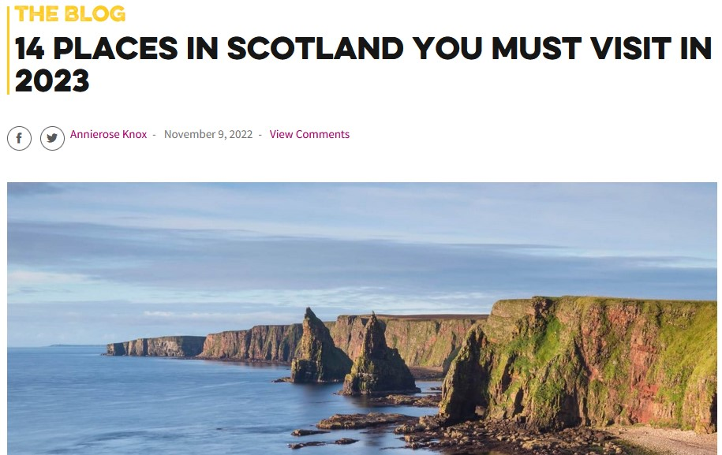

Forfatter: AM, CC & AH
Kapitel 3
Places in Scotland
The historic and beautiful country of Scotland, a part of the United Kingdom, is a popular tourist destination and if you’re planning a trip to this incredible place, you’ll have plenty of options for places to go.
Scotland, most northerly of the four parts of the United Kingdom, occupying about one-third of the island of Great Britain. The name Scotland derives from the Latin Scotia, land of the Scots, a Celtic people from Ireland who settled on the west coast of Great Britain about the 5th century CE. The name Caledonia has often been applied to Scotland, especially in poetry. It is derived from Caledonii, the Roman name of a tribe in the northern part of what is now Scotland. An austere land, subject to extremes of weather, Scotland has proved a difficult home for countless generations of its people, who have nonetheless prized it for its beauty and unique culture. “I am a Scotsman,” the poet and novelist Sir Walter Scott wrote in the 19th century; “therefore I had to fight my way into the world.” Historically one of Europe’s poorest countries, Scotland has contributed much to political and practical theories of progress: forged in the Scottish Enlightenment in the hands of such philosophers as Francis Hutcheson, Adam Smith, and David Hume, who viewed humankind as a product of history and the “pursuit of happiness” as an inalienable right, this progressive ideal contributed substantially to the development of modern democracy. Scots have also played a vital role in many of the world’s most important scientific and technological innovations, with inventors, engineers, and entrepreneurs such as Alexander Graham Bell, James Watt, Andrew Carnegie, and John McAdam extending Scotland’s reach far beyond the small country’s borders. Few students of English-language literature are unacquainted with historian Thomas Carlyle, poet Robert Burns, and novelist Muriel Spark.
Task
Read the article in the link below:
In pairs, read about the 14 places in Scotland you must visit in 2023.
- Lookup how to pronounce the 14 locations and practice how to pronounce their names.
- Which place do you find particularly interesting, and why?